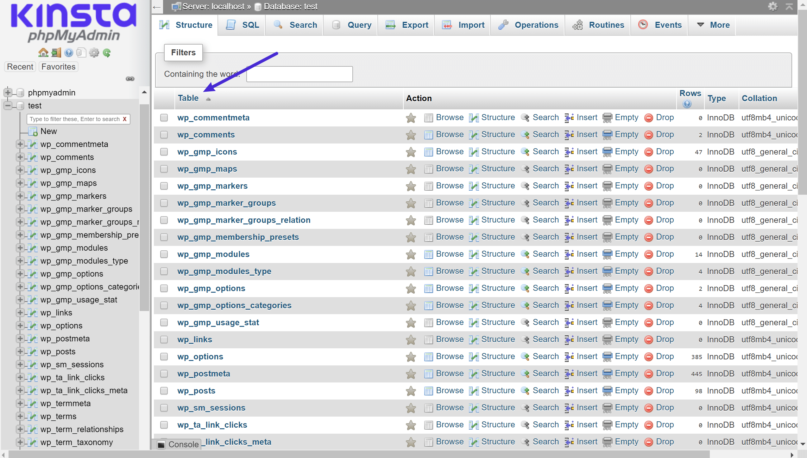

Base de Datos MYSQL
MySQL fue inicialmente desarrollado por MySQL AB (empresa fundada por David Axmark, Allan Larsson y Michael Widenius). MySQL AB fue adquirida por Sun Microsystems en 2008, y ésta a su vez fue comprada por Oracle Corporation en 2010, la cual ya era dueña desde 2005 de Innobase Oy, empresa finlandesa desarrolladora del motor InnoDB para MySQL.
Al contrario de proyectos como Apache, donde el software es desarrollado por una comunidad pública y los derechos de autor del código están en poder del autor individual, MySQL es patrocinado por una empresa privada, que posee el copyright de la mayor parte del código. Esto es lo que posibilita el esquema de doble licenciamiento anteriormente mencionado. La base de datos se distribuye en varias versiones, una Community, distribuida bajo la Licencia pública general de GNU, versión 2, y varias versiones Enterprise, para aquellas empresas que quieran incorporarlo en productos privativos. Las versiones Enterprise incluyen productos o servicios adicionales tales como herramientas de monitorización y asistencia técnica oficial. En 2009 se creó un fork denominado MariaDB por algunos desarrolladores (incluido algunos desarrolladores originales de MySQL) descontentos con el modelo de desarrollo y el hecho de que una misma empresa controle a la vez los productos MySQL y Oracle Database.
Está desarrollado en su mayor parte en ANSI C y C++. Tradicionalmente se considera uno de los cuatro componentes de la pila de desarrollo LAMP y WAMP. MySQL es usado por muchos sitios web grandes y populares, como Wikipedia, Google (aunque no para búsquedas), Facebook, Twitter, Flickr, y YouTube.